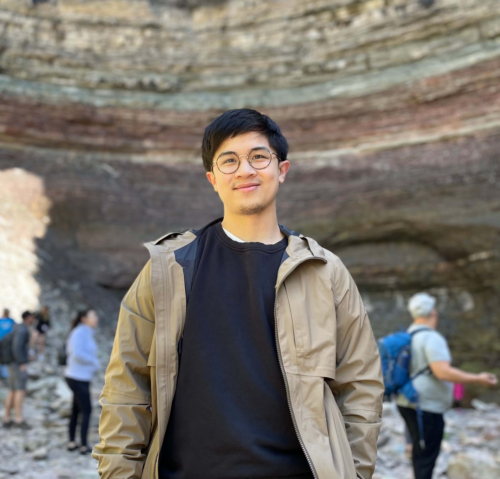

About me
Hi there, my name is Andrew. I'm currently a student at Dominican University of California majoring in Applied Computer Science. I am also part of the Dev Degree program in-partnership with Shopify. My passion is building things for the web. I enjoy designing and developing thoughtful and creative digital experiences. I hope one day to be building prodcts that make a positive impact on people's lives.
Every action we take impacts the lives of others around us. The question is: Are you aware of Your impact?
Hobbies
-
Backcountry Camping
-
Running
-
Spike Ball
Education
-
High School
Our Lady of Lourdes
-
-
University
Dominican University of California
- current
Work Experience
-
Shearers
Ovenroom baker
-
Owens Corning
Machine Operator
-
Ben Thanh Restaurant
Front-end Manager
Interests
Space
James Webb Space Telescope

The dawn of a new era in astronomy has begun as the world gets its first look at the full capabilities of NASA’s James Webb Space Telescope, a partnership with ESA (European Space Agency) and CSA (Canadian Space Agency).
The telescope’s first full-color images and spectroscopic data were released during a televised broadcast at 10:30 a.m. EDT (14:30 UTC) on Tuesday, , from NASA’s Goddard Space Flight Center in Greenbelt, Maryland. These listed targets below represent the first wave of full-color scientific images and spectra the observatory has gathered, and the official beginning of Webb’s general science operations. They were selected by an international committee of representatives from NASA, ESA, CSA, and the Space Telescope Science Institute. These first images from the world’s largest and most powerful space telescope demonstrate Webb at its full power, ready to begin its mission to unfold the infrared universe. The James Webb Space Telescope was launched on 25 December 2021 on an Ariane 5 rocket from Kourou, French Guiana, and arrived at the Sun–Earth L2 Lagrange point in January 2022. The first image from JWST was released to the public via a press conference on .[9] The telescope is the successor of the Hubble as NASA's flagship mission in astrophysics.
JWST's primary mirror consists of 18 hexagonal mirror segments made of gold-plated beryllium, which combined create a 6.5-meter-diameter (21 ft) mirror, compared with Hubble's 2.4 m (7 ft 10 in). This gives JWST a light-collecting area of about 25 square meters, about six times that of Hubble. Unlike Hubble, which observes in the near ultraviolet and visible (0.1 to 0.8 μm), and near infrared (0.8–2.5 μm)[10] spectra, JWST observes in a lower frequency range, from long-wavelength visible light (red) through mid-infrared (0.6–28.3 μm). The telescope must be kept extremely cold, below 50 K (−223 °C; −370 °F), such that the infrared light emitted by the telescope itself does not interfere with the collected light. It is deployed in a solar orbit near the Sun–Earth L2 Lagrange point, about 1.5 million kilometers (930,000 mi) from Earth, where its five-layer sunshield protects it from warming by the Sun, Earth, and Moon.
Read more at: NASA